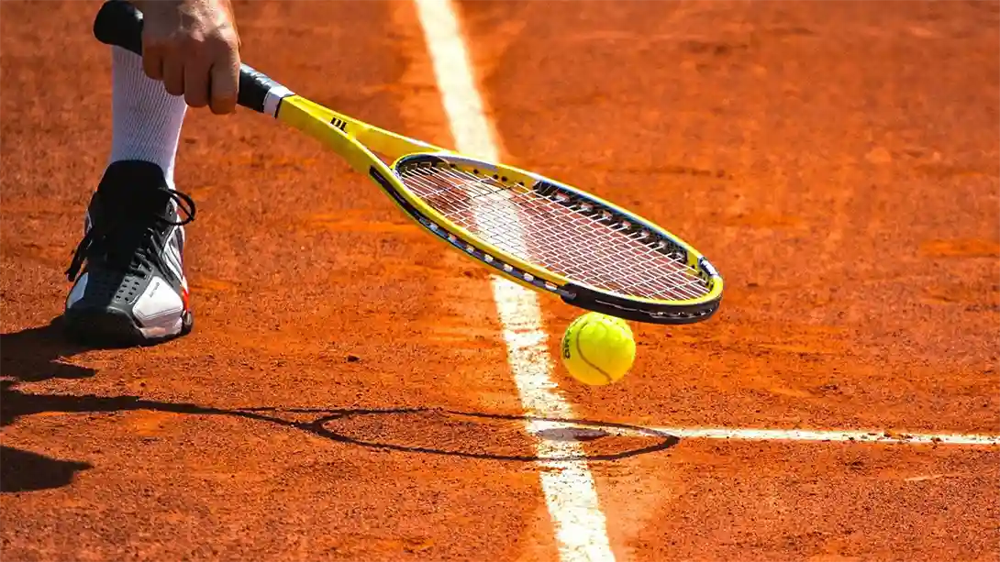

Tennis Players: How To Play Better Squash
Tennis players sometimes switch to playing squash and vice versa. However, just because they both use rackets and a ball doesn’t mean they are similar. Read on to find out how tennis players can improve their squash.
The Serve
The beautiful clay of Roland Garros
The serve in squash can be equally important as in tennis, but in a different way. In tennis, the server is trying to win the point immediately. In squash, the server is trying to STOP the receiver from hitting a winner. However, at lower levels of squash, serves can definitely win points for servers. The better you are, the less chance their is of winning the point from a great serve.
So, does that means you shouldn’t try to hit great serves? No, of course not, but because you only get one serve in squash, you can’t take chances like you do in tennis. A good serve in squash is one that hits the side wall before the receiver can hit it. I’ll talk more about side walls a little later. Serving directly at the opponent is definitely a thing in squash, but only at lower levels. Try it and if it works, use it occasionally.
One last thing to say about serves. High, over head serves generally don’t give you good angles, so avoid them. You can and do see some people playing them, especially when they hit the ball hard, but you never see them at professional level – so that tells you something!
Movement
Be aware that tennis shoes are NOT suitable for a squash court. You MUST wear non-making shoes. While the movements that the feet make are very similar, the shoes are very different. I am talking about shoes because shoes affect movement. Tennis shoes are often designed to slide, whereas squash players almost never slide on purpose – they can’t because of the floor of the court.
When moving around a squash court, you need to staying low a lot of the time and your leg strength is very important. You need to make lots of little steps prior to reaching the ball and then one longer lunge to transfer your weight into the ball – assuming you are trying to hit the ball hard.
After each shot, move back to a location that gives you the best chance to reach any shot your opponent hits. This is called the T, but is NOT simply the join between the half-court line and short line. Do NOT hit the ball and watch. Hit and move!

Can you tell whether either of these players used to play tennis?
Swing Technique And Back Corners
A squash court is a confined space. Both players share it and that must be taken into account when swinging. In tennis, you could have the most outrageous swing style and as long as you can ht the ball with consistent power and control, nobody cares. in squash, that’s not true. There is potential for accidents with big swings. Clearly, I can’t give you a swing lessons in this paragraph, but I can offer some suggestions.
If you know how to slice the ball on your backhand, then you have the basis of a good squash backhand. One difference is the non-hitting arm and I have linked a video below that will address the most common mistakes when hitting squash backhand. Not all backhand have to be sliced, but most are. Sliced shots in tennis are often considered defensive (yes, I know not always, but in the era of heavy topspin they are), in squash the slice is used to ensure the ball gets into the back corner and doesn’t bounce too high.
The forehand in squash is very, very different from its tennis counterpart. Firstly, we never hit topspin (a few times you can hit slight topspin in squash, but more because of why we swing that way than because of the effect the spin has on the ball). A squash forehand is like skimming a stone over a lake. We keep the elbow close to our body and use the rotation of the wrist (NOT A FLICK!) to generate power and control.
Both the slice backhand and the skimmed forehand reduce the size of the swing for two reasons: 1. to have a safe swing in the confined space of the court and 2. because the back wall limits the type of successful swing needed to get the ball out of the back corners.
Tactics And Walls
Talk of squash tactics MUST include the walls. Firstly, the back wall and corners are the basics of good squash. Whether you hit straight (great) or crosscourt (good) is less important than the depth. You main objective is to get your opponent into the back corners so that they hit a weak shot for you to kill. That sounds so easy and the idea is, but the execution is much harder, because clearly they are trying to do the same to you.
Use the full height of the front wall to vary the length, and how hard you hit the ball of course! Do not try to hit the ball millimetres above the tin, thinking you can hit easy winners because squash doesn’t work that way. Stick you opponent in the back corners then your kill or short shots don’t have to have such small margins of error!
The side walls can be your friend or your enemy. They are used when hitting straight shots to limit your opponents return. Ideally, your straight shot would touch the side wall, but that’s much easier said than done. On crosscourts, the sidewalls are use to make the ball stay low and cause timing errors in your opponents’ returns. Finally, the side walls are used to play boasts. Boasts is when you purposely hit the ball at the side wall to make it go to the front of the court. There are many types of boasts, but generally you are not trying to hit a winner, just trying to get your opponent out of position and tire them.

No tennis tactics here, thank you.
Final Thoughts
Tennis players sometimes think that squash is about “flicking the wrist”, and while we do use our forearm a lot, we don’t bend or flick the wrist. That doesn’t generate power or control and could even injure yourself. remember, keep your swing tight (both back swing and follow through!), aim to get the ball into the corners by using the walls thoughtfully and pay attention to where your shots hit the front wall.
If you find yourself close to your opponent and are worried you might hit them, just stop and play a let – play the point again. A point is not worth injuring your opponent for. I would advise learning a little about the rules as well, because it can save a lot of silly disagreements.
If you have any specific questions, just email me and I will answer them as soon as I can.
Continue Reading
• Previous: What Is The Split-Step In Squash?
• Next: What’s The Secret To Beating Tricky Squash Players?
• Random: Take A Chance!
• Popular: Why Do Professional Squash Players Touch The Side Wall before Serving?